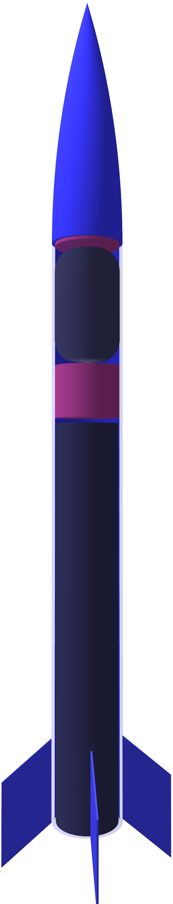

Launch Vehicles
ζ
ζ is a small, low-powered model rocket with a flight computer, data recorder and telemetry unit
Program Goals:
- Build and fly a model rocket capable of reaching 1km in altitude AGL and returning safely
- Build and fly a flight computer capable of data recording, in-flight communication with ground control equipment and deploying a recovery system
- Build and fly a low-impulse, Ammonium Nitrate-based soild rocket motor
The Vehicle:

Nosecone Assembly:
-
A small hole near the top of the nosecone assembly, which is not visible on the image, equalizes the internal pressure to that of the atmosphere around it on ascent to keep the
nosecone assembly from separating prematurely.
-
The recovery system, located in the nosecone assembly and highlighted in red, is a parachute triggered by a pyrotechnic mechanism which increases the air pressure in the
nosecone compared to the outside ambient pressure, which causes it to separate from the main housing of the vehicle, releasing the parachute and ensuring a safe touchdown and
recovery. It is connected to the vehicle with a shock cord.
-
The nosecone assembly is designed to be as aerodynamic as possible, ensuring vehicle stability on ascent and the highest possible apogee.
Flight Computer:
-
The flight data recorder records data using the barometric altimeter and inertial measurement unit, consisting of multiple gyroscopes, accelerometers, and magnetometers to
determine the altitude, velocity, acceleration and heading of the vehicle at any point in flight.
-
The telemetry unit, which doubles as the control unit for the flight computer relays the data being recorded on the computer to ground control equipment for monitoring and
data analysis in case of an in-flight anomaly. The telemetry unit also waits for an optimal velocity and altitude to deploy the recovery system. The software running on the
control unit uses state-detection to ensure that it is performing the correct actions at the correct points in flight.
-
The recovery system deployment circuit consists of a high-current field-effect transistor, which triggers a pyrotechnic charge to release enough pressure in the nosecone to
separate it from the main vehicle, releasing the parachute.
Solid Rocket Motor:
-
The solid rocket motor is a small-impulse motor, with an Ammonium-Nitrate and Aluminum propellant mixture. The propellant grain is cylindrical, 240mm tall and 38mm wide.
-
The motor is a core-burner, with a circular bore in the BATES configuration, which results in a progressive-regressive thrust curve. This means that the vehicle's thrust will
peak in the middle of it's burn, and the highest dynamic forces will be experienced towards the middle of the burn.
-
The motor casing is an aluminum casing, manufactured by Aerotech and designed to be recovered and reused on multiple flights.
Aerodynamic Surfaces:
-
The primary function of the aerodynamic surfaces is to ensure that the center of lift is closer to the rear of the vehicle than the center of mass, ensuring vehicle stability
on ascent.
-
The aerodynamic surfaces are 0.1mm thick, trapezoidal and optimized for the least possible amount of drag while still keeping the vehicle stable.
Expected Altitude
0
meters
Expected Velocity at Burnout
0
meters per second